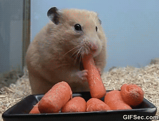

Hamster
The name “hamster” comes from the German word, hamstern, which means “to hoard.” When eating, hamsters will pack their food in pockets,called cheek pouches, on both sides of their faces to snack on later.
- Scientific Name: Mesocricetus auratus
- Average Lifespan: 3 years
- Diet: Omnivores
- Behavior: Nocturnal
Hamsters are more crepuscular than nocturnal and, in the wild, remain underground during the day to avoid being caught by predators. They feed primarily on seeds, fruits, and vegetation, and will occasionally eat burrowing insects. Hamsters are typically stout-bodied, with tails shorter than body length, and have small, furry ears, short, stocky legs, and wide feet. They have thick, silky fur, which can be long or short, colored black, grey, honey, white, brown, yellow, red, or a mix, depending on the species.